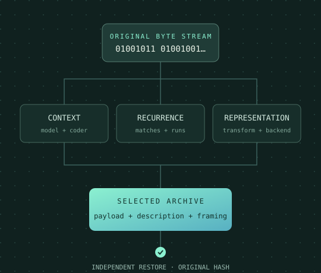
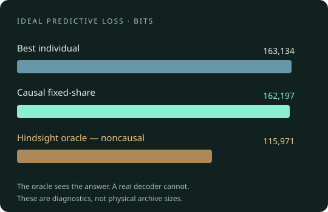

27,682,006 bytes
Published result for paq8px v217 −12L over the 211,938,580-byte, 12-file corpus. Archive-only size is useful context; hardware, time and resource conditions differ from this release run.
Silesia compression benchmark ↗THE COMMAND LINE. LESS BAGGAGE.
Meet CIX, pronounced six. Lossless compression that explores a bounded set of representations and coding routes, then carries everything needed to bring your data back.
Three familiar commands. Exact restoration. Complete archive accounting.

A bounded search for a useful representation.
Models, metadata and framing included.
Fresh decode and SHA-256 verification.
THE DISTRIBUTION, MEASURED
These measurements use the exact Linux distribution candidate. Compare complete archive sizes across the three profiles, then inspect the time and memory required. A result outside its declared resource budget is shown as unranked.
| Dataset | Original bytes | Published comparison | FAST | DEFAULT | BEST | Selected profile encode / decode sum |
|---|
Up to 12 visible inputs. The faint track represents the original size; expansion is labelled explicitly.
| Input / dataset | Original | Published comparison | FAST bytes · % | DEFAULT bytes · % | BEST bytes · % | DEFAULT encode / decode | Peak RSS encode |
|---|
Each file is compressed individually using --fast, no effort flag, or --best, with --threads 4. Native admission defaults are 512 MiB for FAST/DEFAULT and 2 GiB for BEST/decode. A separate cgroup limits the whole job to 10 GiB, four physical cores and no swap. Active temporary storage is capped at 4 GB.
Wall-time budgets are declared before execution and scale with input size, up to 30 minutes for FAST/DEFAULT and two hours for BEST. Small-file BEST cells receive at least 30 minutes, allowing its native whole-file search to finish. The budget includes independent decoding. Only completed, exactly restored archives receive sizes and ratios. Peak RSS is GNU time process evidence, not a promise about every platform. Timings are one observation, not a statistical speed claim. GNU time reports centiseconds: a displayed 0.00 is below reporting resolution, not zero runtime. Corpus times sum the rounded member observations.
Host: Intel Core i9-13900K, Ubuntu 24.04.4 LTS, Linux 6.8.0-142. Four physical P-cores (logical CPUs 8, 10, 12, 14) are assigned to each run. The downloadable manifest pins binaries, system libraries, source hashes and commands.
Percent means archive size as a percentage of original size, not percentage saved. Small files can expand. Dataset totals require every constituent result. Local subsets and training data retain their labels.
PUBLIC RECORDS & COMPARISON SCOPE
Published result for paq8px v217 −12L over the 211,938,580-byte, 12-file corpus. Archive-only size is useful context; hardware, time and resource conditions differ from this release run.
Silesia compression benchmark ↗Published fx2-cmix-T prize total, July 2026. This includes the compressor and self-extracting archive under the prize accounting rules. It is not directly comparable to CIX archive bytes alone.
Official Hutter Prize record ↗We did not verify a maintained, exact-byte current record for every local dataset. Those fields remain unknown. A local training file, a prepared subset or a cached download is never silently promoted to a canonical benchmark.
Record scope and sources ↓A TOOLBOX WITH A DECODER
Data has different kinds of repetition. CIX brings several mechanisms into one utility while keeping their roles clear.
Adaptive symbol counts and context models describe what tends to come next. Existing context mixing combines causal predictive signals internally.
Repeated strings, repeated symbols and phrase structure can replace literal bytes with shorter descriptions when the full cost pays off.
Reversible layouts and BWT-derived routes can expose useful regularity. Their descriptions travel with the archive and count toward its size.
Native library backends include zlib, bzip2, liblzma, Zstandard and Brotli, with vendored libbsc and ZPAQ support. Their contributions are attributed.
This is selection among completed coding routes. It is not a claim that “mixing compressors” is new theory.
A separate research audit tested whether additional causal mixing earns its cost. The measured gain did not justify a new production mixer.
RESEARCH THAT CAN SAY NO
The hindsight oracle selects the best predictor after seeing the byte. It is a diagnostic, not a compressor. That advantage makes its results impossible to treat as achievable archive savings.
A 28-expert audit found a 28.91% hindsight gap. A legitimate causal fixed-share combination captured only 0.5747% improvement over the best traced expert and missed the material promotion gate. The follow-up screen of omitted native signals also failed that gate.
Null controls exposed how selection noise can manufacture apparent complementarity. Negative results stayed in the record. No new mixed archive format was promoted.

53,248 held-out bytes within an already studied corpus. Ideal predictive bits only. No theoretical compression limit is claimed.
FAMILIAR SHELL. NEW OPTION.
# Compress; keep the original input $ cix report.dat # Restore or test an archive $ uncix report.dat.cix $ uncix -t report.dat.cix # Stream a directory archive $ tar -cf - folder/ | cix -c > folder.tar.cix $ cixcat folder.tar.cix | tar -xf -
FAST favours latency. DEFAULT balances the search. BEST evaluates a wider bounded candidate set; it does not promise a globally optimal archive.
cix input.binOne input per invocation. Input files are kept. Use -f only when you intend to replace an existing output.
SMALL DISTRIBUTION. VISIBLE PROVENANCE.
The distribution source is a separate, lean export: runtime code, required dependencies, compatibility documentation, tests, manuals and packaging. Corpora, benchmark outputs, traces and experimental programs stay out.
Rust 1.98+, a C++ toolchain and documented native libraries. Includes a Makefile, Debian/RPM recipes and compatibility notes.
Source archive ↓Build & installation instructions →These packages carry the same command binaries used for the release measurements. Dynamic system-library requirements are included.
Built and tested on this Linux host. RPM packaging alone does not establish RHEL/Fedora runtime compatibility.
Homebrew and Windows/vcpkg source recipes are included. Native platform testing remains pending; no unverified platform binaries are offered.
View platform requirements →Zero current Rust issues in the release Sonar scan, quality gate OK, and Clippy clean. Core and process tests pass. Vendored C++ is outside that Sonar scope.
A CIX archive survives standard SquashFS storage/extraction and restores exactly. This is file transport interoperability, not native CIX kernel filesystem compression.
Checksums, dependency records and resource receipts bind measurements to the distribution. Licensing is a private proposal pending owner confirmation before public release.